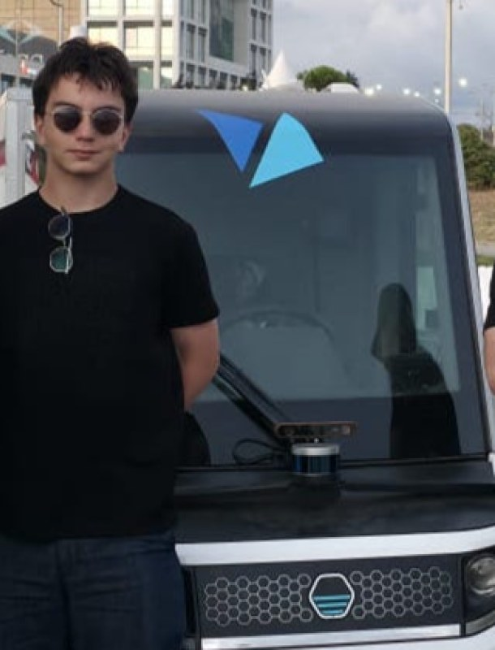
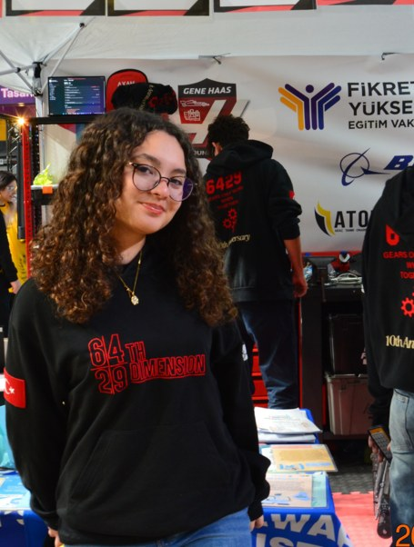

Same birthday, different brains
People of the same chronological age can receive different MRI-derived predictions. The figures below illustrate the concept; they are not study results.
A T1 MRI brain-age research platform built around fine-tuned SFCN, automated image preparation and a regional assessment dashboard.
Voices from the neurologists, imaging researchers and study teams evaluating NeuroMetric.
The problem
Brain-predicted age difference (PAD) is predicted age minus chronological age. It is a model-derived estimate, not a measured biological age or a diagnosis.
People of the same chronological age can receive different MRI-derived predictions. The figures below illustrate the concept; they are not study results.
Repeat MRI could support future change tracking. Slope is a planned research view; we have not validated longitudinal ageing rates.
Our pipeline uses brain extraction, bias-field correction and linear MNI alignment before SFCN inference. The diagram is conceptual: reader comparison and test–retest reliability have not been measured.
Method
T1 MRI → preprocessing → quality control → SFCN prediction → dashboard
Raw scan → aligned volume
MNI alignment checks
Brain age + PAD
Regional dashboard + report
Explainability
Whole-brain estimates and regional views need different interpretation. The neighboring report uses illustrative values.
Regional analysis — The dashboard presents brain regions separately; regional gaps are not additive parts of the whole-brain gap.
Matched cohort testing — Our OASIS protocol compares available cases with age/sex-matched controls. Validated reference percentiles are not available.
Model heatmap — OAS1_0030 includes real signed Grad-CAM from SFCN contrast-cont4. Other demos remain schematic; attribution and registration still require review.
Longitudinal research
A future view could compare predictions across repeat scans. This chart is illustrative; no longitudinal slope or healthy reference trajectory has been validated.
Team
Our project combines MRI preparation, machine learning experiments and a research-focused dashboard. Clinical partnerships and deployment have not been established.


Use cases
Explore brain-age differences in OASIS-1 cases and matched controls; not a diagnostic screening tool.
Improve rounded-year and ±1-year hits while monitoring MAE on a fixed validation cohort.
Test generalization to unseen participants and datasets before making clinical claims.